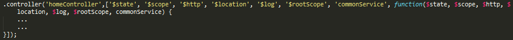

Recently while working with my team on a privileged Firefox OS application built with Angular JS, I came across a glaring issue. The app was not found working on OS version 2.0, specifically on Flame developer devices, for us. A white blank screen was reported when the app booted up. I spent a good couple of days dedicatedly for this issue till my brains fried out. But finally I was able to crack it. One of the good-souled Mozillian suggested to share it with the world so that you don't spent time, efforts and frustration for this as I did. I coudn't disagree and here I am sharing this with you.
It was an issue with the way we were handling dependency injections in Angular on the app implemenation front, apart from CSP issues. We were using implicit annotations and it seems that a new update on 2.0 devices supported only "strict" DI. Strict mode throws an error whenever a service tries to use implicit annotations.
- Modify the route config section to have an array of dependencies before using them as arguments in your function. Refer below image from my sublime changes. This has 2 benefits:
- This will fix the critical issue we were seeing, and will make the apps work on Flame 2.0 devices.
- In case you minify the code files using grunt or gulp, the minifier would change the named arguments (e.g $locationProvider) to something like "j". Hence we need to pass string literals in the form of an array so that minification does not affect it.
- You would need to make a similar change to all your "controllers" as well. Like below: 
- Ensure to put a closing "]" tag for the array at the end in the above two changes. It's a common dev mistake that gets easily committed.
- Add "ng-csp" attribute to the top-level html element (the one having the "ng-app" attribute).
- This is to get rid of the CSP violation errors showing up on the console.
- Beware, this reduces the performance of Angular by 30%. Hence this is optional. Use it only if you see CSP errors in console.
- Manually add the angular-csp.css into your css folder, and reference it in your HTML page. In a non-CSP mode, Angular does not inject inline CSS that it usually does, hence you need to manually copy and use the css file.